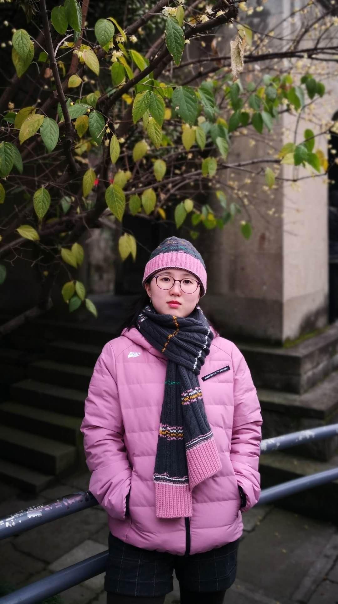

Welcome! My name is Yuwei Wan (万雨薇) and I am a PhD student in Computational Linguistics at City University of Hong Kong.
Before this, I completed my Computer Science Master degree at Johns Hopkins and my Bachelor in Linguistics and Language Applications, as well as a minor in Computer Science at CityU.
I worked in DeepWisdom (深度赋智) as an NLP engineer for about a year with with rich experience in NLP tasks like text classification and named entity recognition.
My research interests lie in applying linguistics knowledge in NLP models and interdisciplinary knowledge mining.
AI for science is one of my primary focus, which holds tremendous promise in having an impact on the way scientific discovery.
In 2022, some PhD students in UNSW and I set up a starup called GreenDynamics. I'm CTO of the company and responsible for various NLP applications, like knowledge mining and material prediction.
I'm also enthusiastic about domain-specific applications, like poem analysis (literature) and judgement prediction (law).
Feel free to look at my research to learn more!
You can also download my CV
NOTE: I'm seeking oppoturnities of co-operation in law domain (especially HK and mainland law) and looking forward to your contact.